DATA 301 - Introduction to Data Analytics
Lab 10: Visualization with Tableau
This lab uses Tableau to visualize, analyze, and explore data sets. This lab should be done individually.
Objectives
- Explore the capabilities of Tableau for importing, formatting, and visualizing data sets.
- Visualize data from an Excel spreadsheet including using bar charts, line charts, maps, and trend lines.
- Connect to and retrieve data from a relational database.
- Apply filtering, sorting, and aggregation in visualizations.
- Create dashboards consisting of multiple related visualizations.
Getting Started
Download Tableau. Information on a student license is in Connect.
Question #1 - Visualizing Excel Sensor Data
Produce several visualizations for the Excel sensor data used in Lab 1.
- Use a line graph to show the data value over time for each sensor id. Use a filter so that only sensor 1_2 is shown. Add a trend line. (1 mark) Note: Make sure the timestamp is "Continuous" and show "Exact date" (right-click on pill to change).
- Create a histogram showing all sensor values. (1 mark)
- Use the circle view to show the distribution of sensor values for all sensors. (1 mark)
Screenshot: Sensor Data over Time for Sensor 1_2
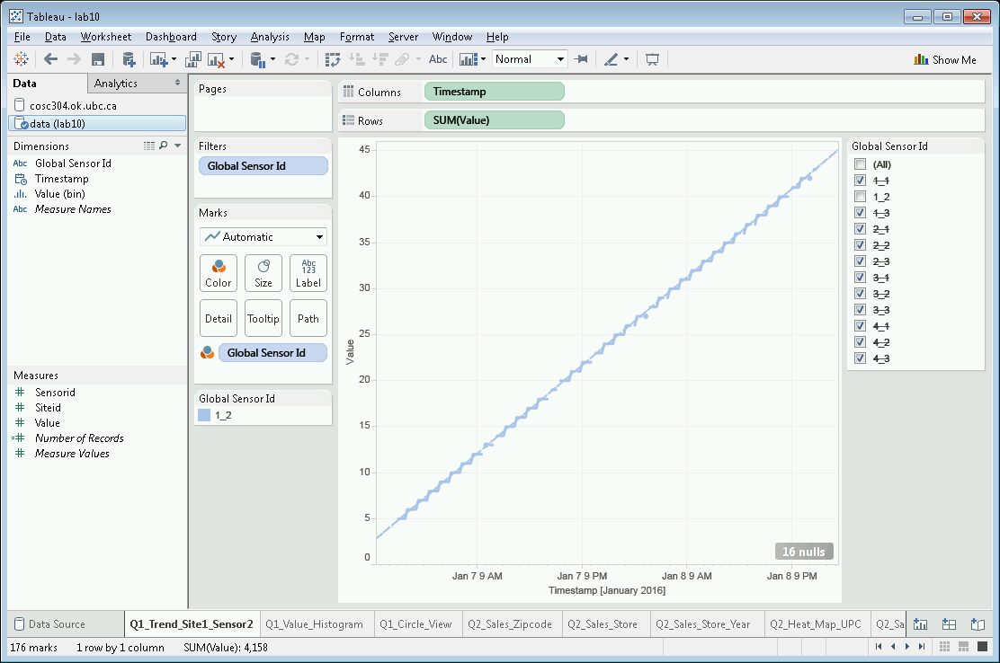
Screenshot: Sensor Data Value Histogram
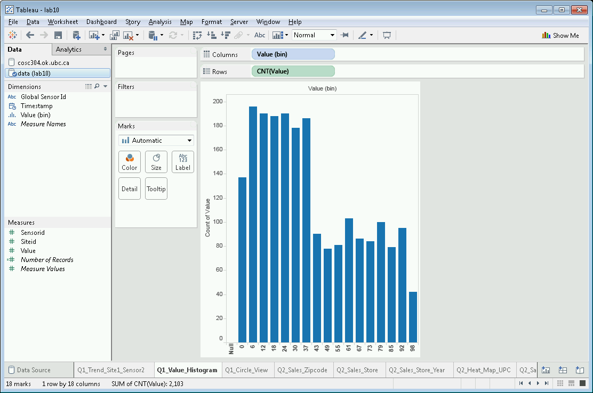
Screenshot: Sensor Data Circle View
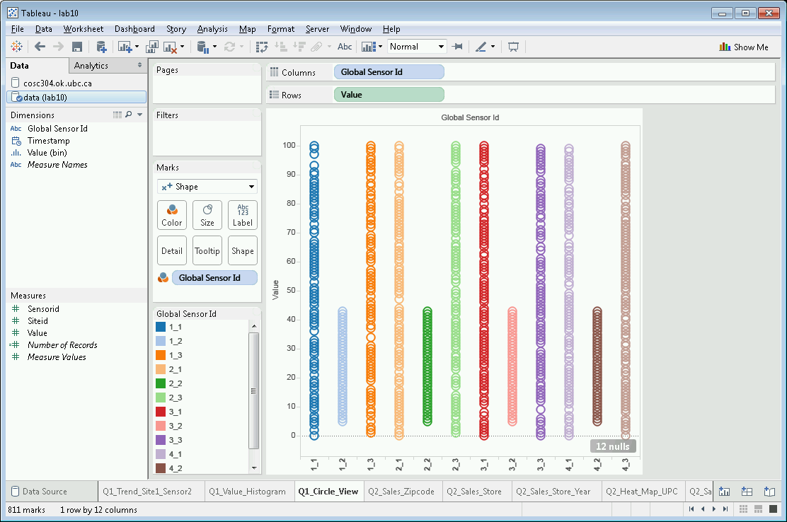
Question #2 - Visualizing Database of Business Data
Lab 2 used sales data for grocery stores in the Chicago area. Produce these visualizations and a dashboard from this data located in a SQL Server relational database. The connection information is:
Server: sql04.ok.ubc.ca
Database: data301
User: data301
Password: ubc
If you are using your own computer, you may need to download and install the SQL Server ODBC driver.
You will need to use the three tables: sales, store, and vendor and join them together using left outer joins to make sure no sales records are lost.
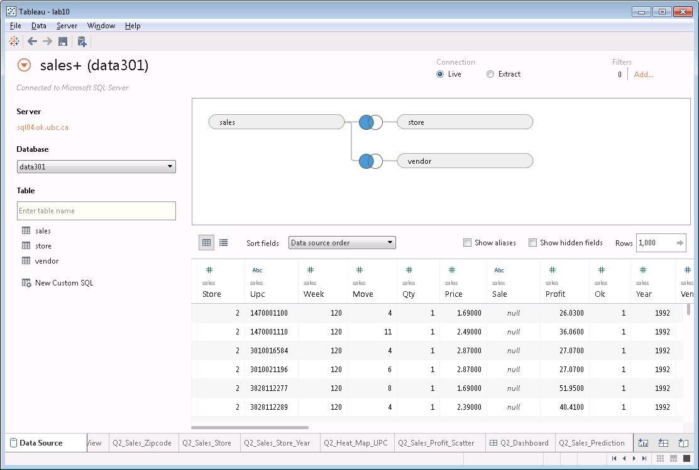
- Create calculated fields for GrossProfit and GrossSales. Remember GrossSales=Price*Move/Qty and GrossProfit=GrossSales*Profit/100. (1 mark)
- Display the sum of the gross sales per ZIP code. (1 mark) Note: If your data is not displaying on the map, right click on map, select
Edit Locations.. and make sure the country selected is the United States.
- Create a pie chart showing the sum of GrossSales per store. (0.5 mark)
- Create a stacked bar chart displaying GrossSales per store per year. (0.5 mark)
- Create a heat map showing GrossProfit and GrossSales per store and per VendorId/UPC. (1 mark)
- Create a scatter plot showing GrossProfit/GrossSales per store. (1 mark)
- Create a line plot that performs a sales prediction using a trend line. (1 mark)
- Create a dashboard that contains the map with sales per ZIP code, scatter plot, sales by vendor heat map, and gross sales prediction. Must have a filter on store and vendor that controls all sheets on dashboard. (1 mark)
- Create a dashboard that contains at least 3 new worksheets. The dashboard should have a useful analysis goal. Provide a description indicating your analysis goal and result. (3 bonus marks)
Screenshot: Sales per zip code
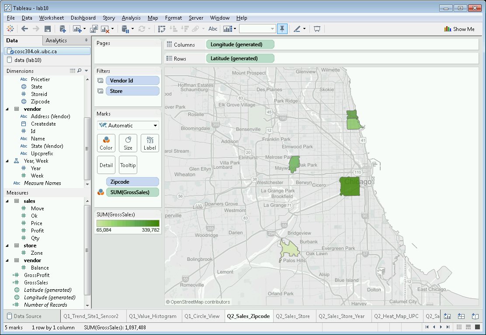
Screenshot: Pie chart with GrossSales per store
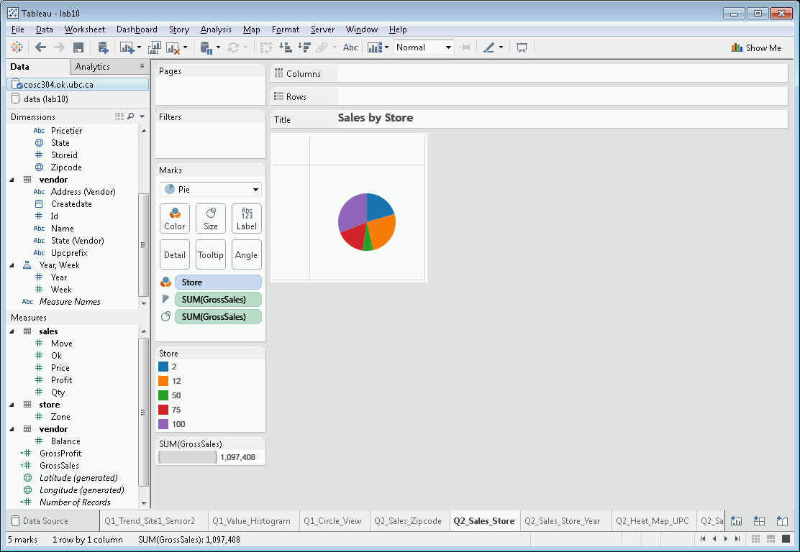
Screenshot: Stacked bar chart with sales per store per year
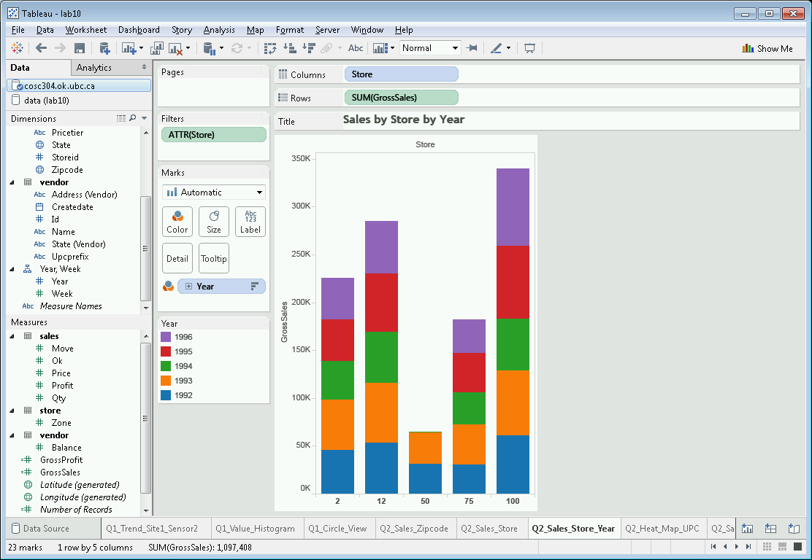
Screenshot: Heat Map with GrossProfit/GrossSales per store/UPC
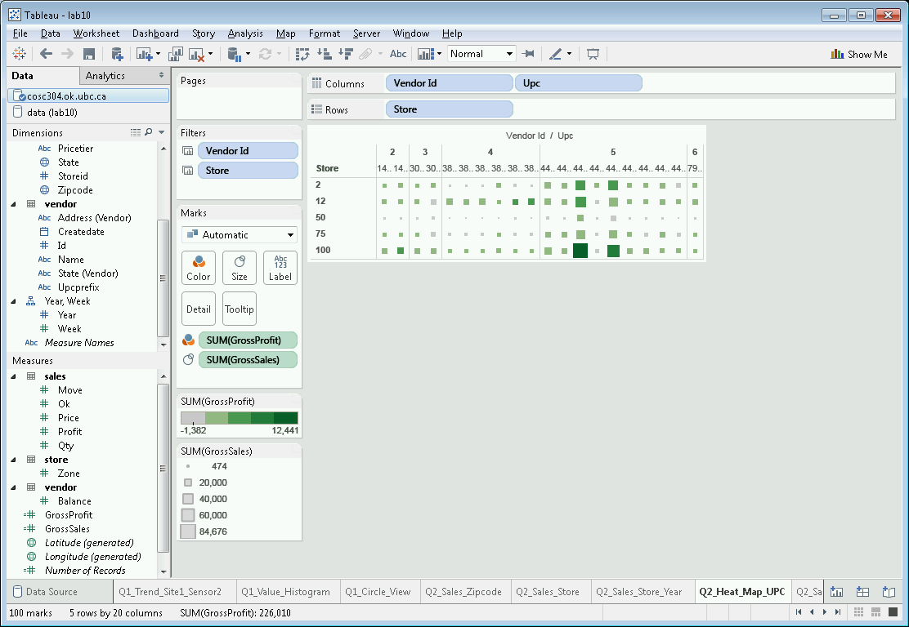
Screenshot: Scatter Plot showing GrossProfit/GrossSales per store
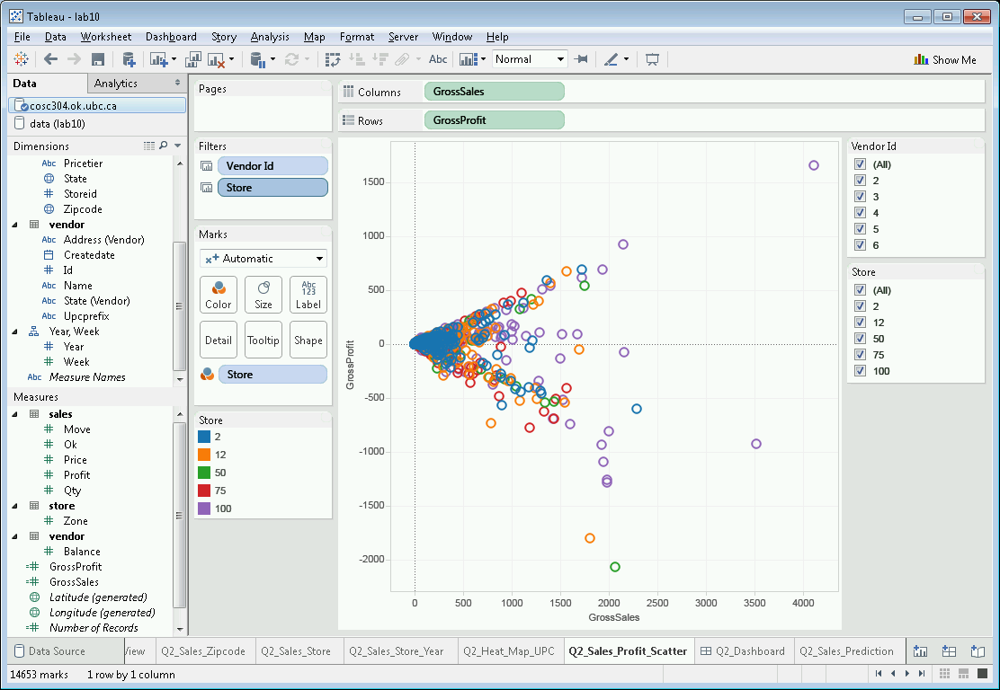
Screenshot: Sales Prediction
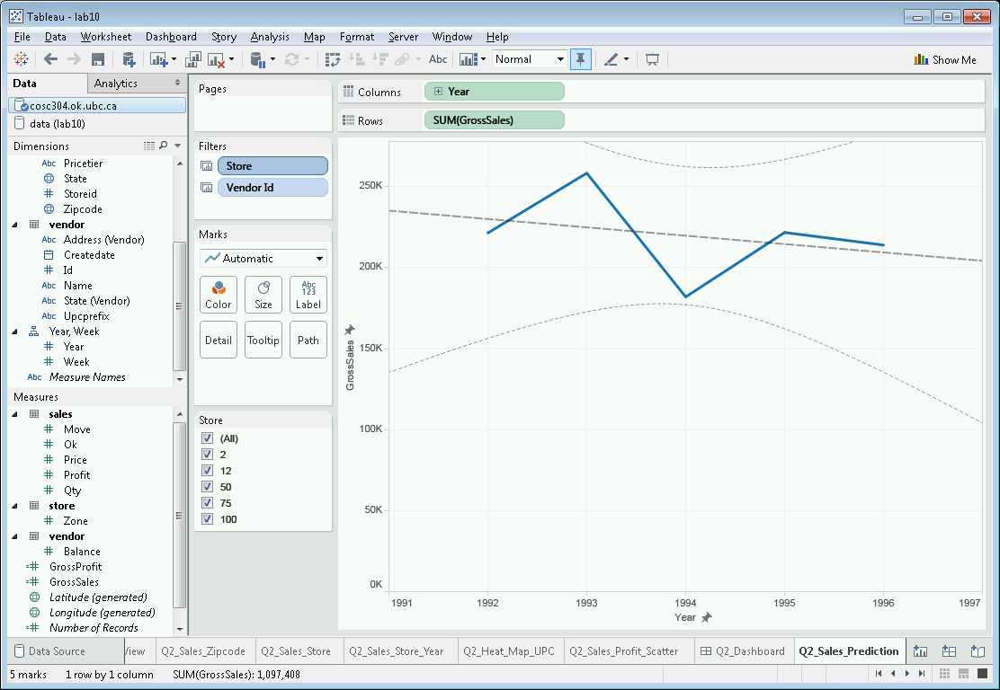
Screenshot: Dashboard
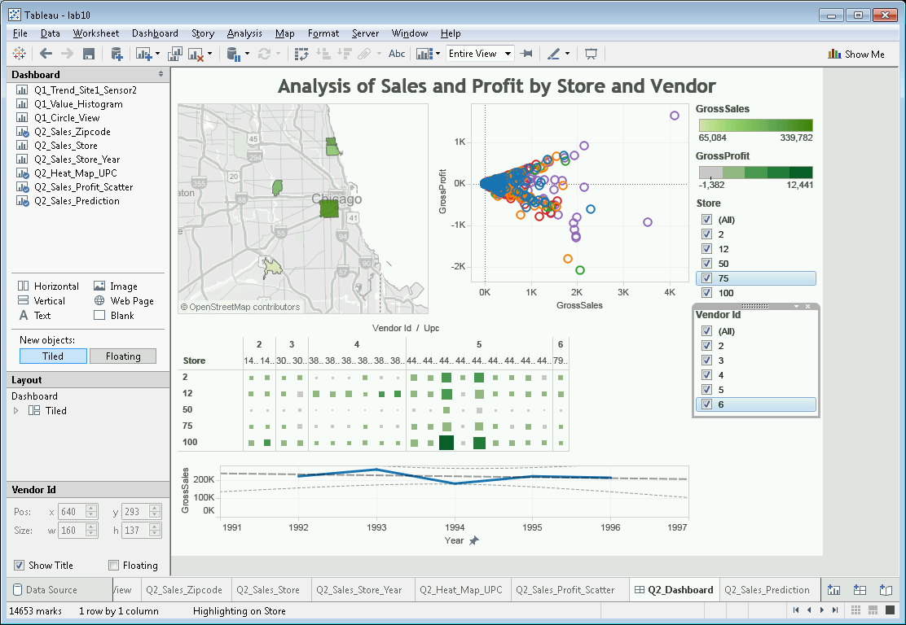
Submission
When complete, submit your Tableau file saved as lab10.twbx (Tableau Packaged Workbook) using Connect as well as a description of any bonus features you added.
 Home
Home